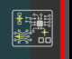

Iconos del Espacio de Trabajo
Los iconos del espacio de trabajo proporcionan acceso rápido a funciones útiles.

Mostrar/ocultar cruces

Esta opción muestra/oculta los retículos (cross hairs) y los números de error en el área principal del espacio de trabajo para una mayor visibilidad de la imagen UUI.
Proceso automático

Habilita/deshabilita el procesamiento automático después de tomar la imagen UUI.
Color de la máscara de error

Cambia el color de la máscara de error por un color más adecuado según el color de la PCBA. Además, es posible cambiar la opacidad de la máscara presionando CTRL + rueda del ratón arriba/abajo cuando el puntero está sobre el icono.